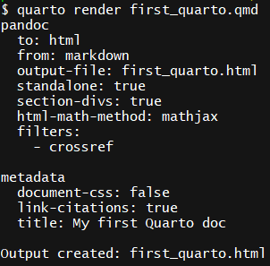
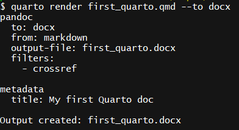
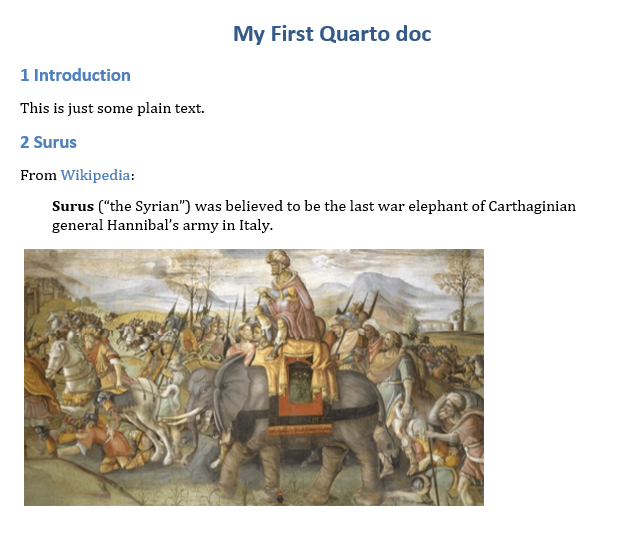

Rendering Basics
Overview
In the last section, we created first_quarto.qmd, our first Quarto document and got familiar with the Quarto Workflow. Something worth noting is that there will be a first_quarto.html in the directory that you’re working out of. This is the rendered HTML version of the document that Quarto creates for the live preview. But what if you’d prefer the document to be in a pdf or docx file? In this section, we’ll learn how to do just that.
Our Document So Far
In case you didn’t follow along from the previous section, here are the contents of first_quarto.qmd, the document that we’re working with:
---
title: My first Quarto doc
---
## Introduction
This is some plain text.
## Surus
From [Wikipedia](https://en.wikipedia.org/wiki/Surus):
> **Surus** ("the Syrian") was believed to be the last war elephant of Carthaginian general Hannibal's army in Italy.
{fig-alt="A painting of Surus."}If you don’t have surus.png, download it from here and save it to the same directory as first_quarto.qmd. Here is what the above Markdown looks like in the live preview:
{kind=link}

What’s going on behind the scenes of the Quarto live preview is that Quarto is rendering the document to HTML and pushing it to either your browser or viewer pane in RStudio. There are two main ways to change the final output format of first_quarto.qmd:
- Passing the output format to the
quarto rendercommand from the command line - Adding the output format to the
yamlfront matter
Output Format as a Command Line Argument
Open your command line interface and enter the following command:
quarto render first_quarto.qmdThe console output will look something like this:

Notice that the document is being rendered to HTML. By default, Quarto will render all documents to HTML unless you tell it otherwise, which we can do by using the --to <output-format> command line option. For example, to render first_quarto.qmd to a docx, enter:
quarto render first_quarto.qmd --to docxNotice that the console output changed to reflect that we’re now rendering the document to a docx file:

The final document will look something like:

We can use a similar command to render the document to a pdf:
quarto render first_quarto.qmd --to pdfThe output will be something like:

Besides different output formats, Pandoc supports a wide variety of command line options, and since Quarto uses Pandoc to render the documents, all of these options are supported by quarto render. For example, to number the sections of the final output document, we can pass --number-sections as a command line argument
quarto render first_quarto.qmd --to docx --number-sections
Output Format as YAML Options
Note that while it is possible to pass many options via the command line, it’s often much more convenient to provide these options within the document itself as YAML front matter. For example, let’s add the number-sections option to our document like so:
---
title: "My First Quarto Document"
number-sections: true
---After making these changes and saving the document, you’ll notice that the preview now has numbered sections:

Now we can render the document to a docx without passing the --number-sections option:
quarto render first_quarto.qmd --to docxThe resulting first_quarto.docx will have numbered sections without us having to pass the argument.
Similarly, we can add the desired output format to the YAML front matter. For instance, to output to docx by default, we can do:
---
title: "My First Quarto Document"
number-sections: true
format: docx
---Now that we have put these options in the YAML front matter, we can simply call quarto render to get the desired result:
quarto render first_quarto.qmdNote that in this case rendering with no explicit --to argument results in a docx, since format: docx is specified in the YAML.
Options may include any of the defined Pandoc metadata variables or defaults. For example, here we take advantage of quite a few more options for PDF generation:
---
title: "My First Quarto Document"
author: "Jane Doe"
format: pdf
toc: true
number-sections: true
documentclass: report
geometry:
- top=30mm
- left=20mm
- heightrounded
---Render the document with quarto render first_quarto.qmd and see how all the options affected the final output.
This method of including options in the YAML front matter is usually preferable to passing them on the command line because:
- It is much easier to reproduce a document this way since all of the options are in the document itself
- As you add more options, the command will become very big and difficult to edit. Editing options in the YAML of a document is much easier to do.
Multiple Formats
The above example included a simple format: pdf value to set the default format. It’s also possible to provide multiple formats along with YAML options set on a per-format basis. For example, this document defines HTML, PDF, and Word output:
---
title: "My First Quarto Document"
author: "Jane Doe"
toc: true
toc-depth: 2
format:
html:
max-width: 800px
fontsize: 18px
html-math-method: katex
pdf:
documentclass: report
margin-left: 30mm
margin-right: 30mm
docx:
number-sections: true
---Note that the toc and toc-depth options are shared across all formats, and the options listed below html, pdf, and docx are only applied to their respective formats.
If you render this document without a --to argument, it will be rendered as html since that is the first format listed in the file. To render as another format just provide an explicit --to argument:
quarto render document.qmd # will render to html
quarto render document.qmd --to pdf
quarto render document.qmd --to docxYou can learn about the available options for each format in the Pandoc documentation on metadata variables and defaults.
Note that you can share format options across a set of documents using Quarto Projects.